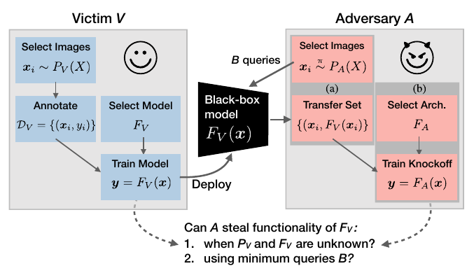
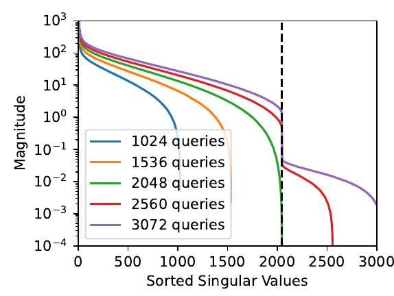

Model Stealing
& Extraction
Copying a model through the small window of its API
Albert No · Yonsei University
Trustworthy AI · 2026
Contents
The Threat
Steal behavior or weights through an API
A Model Is an Asset
A trained model costs real money to build.
- Collected and cleaned data
- Expensive compute to train
- Tuning and human feedback
The result is intellectual property, like a recipe.
Served Behind an API
You rarely get the weights. You get a narrow window.
API = Application Programming Interface: send input, get output.
What "Stealing" Means
Two targets, very different difficulty.
Behavior
A copy that answers like the original.
Weights
The exact numbers inside the model.
Both reached through the same small output window.
The Core Move
Every answer the model gives away is a free training label for a copy.
The attacker never opens the box. They learn it from the outside.
Three Stakes
Why a stolen model matters.
Money
A rival skips the training bill.
IP
Your model is your product.
Security
A copy helps craft attacks.
A Copy Is a Stepping-Stone
Once you hold a local copy, you can probe it freely.
- Craft adversarial inputs offline
- Then send them to the real model
- Attacks often transfer across copies
Stealing the model is step one of a bigger attack.
A Threat With a History
Studied since the first pay-per-query model APIs.
- 2016: stealing simple cloud classifiers
- 2019–20: stealing deep networks
- 2024: stealing pieces of production language models
Query-Based Stealing
Train a clone on the target's answers
The Basic Recipe
Treat the target as a free labeling service.

Knockoff Nets
Steal a classifier with random public images.
- Feed unrelated photos to the target
- Collect the labels it returns
- Train a clone, never seeing real training data
You Don't Need Their Data
The labels carry the model's knowledge. Any reasonable inputs will do.
This is why a closed training set does not protect a model.
Two Goals: Accuracy vs Fidelity
Accuracy
Clone is correct on the real task.
Fidelity
Clone agrees with the target, right or wrong.
A high-fidelity copy even copies the target's mistakes.
Why the Difference Matters
The two goals serve different attackers.
- Want a free product: chase accuracy
- Want to attack the target: chase fidelity
A faithful copy mirrors the original's blind spots.
More Queries, Better Copy
Fidelity climbs with the query budget, then flattens.
Diminishing returns: each extra query buys less.
The Attacker's Dial
Stealing is a cost-benefit calculation.
Cheaper than training from scratch ⇒ the copy is worth making.
Stealing Via APIs
Probabilities leak more than labels
Labels vs Probabilities
Many APIs return more than a single answer.
Just a label
"This image is a cat."
Full scores
"cat 0.91, dog 0.07, fox 0.02"
The scores expose how sure the model is.
Confidence Leaks Knowledge
A probability is a richer label than a single class. It teaches the clone faster.
One scored query can be worth many label-only queries.
This Is Distillation
The same trick that compresses models, turned hostile.
- A teacher's soft scores train a student
- Honest use: shrink your own model
- Hostile use: shrink someone else's
Soft Labels Carry More
A hard label says one thing; soft scores say many.
Equation-Solving Attacks
For a simple model, scores pin down the weights exactly.
Enough scored queries ⇒ solve for $w$ and $b$ directly.
High Fidelity Has a Price
An almost-exact copy of a deep network is expensive.
- Many millions of careful queries
- Heavy compute to fit the clone
- Still cheaper than the original training
Accuracy Is Cheaper Than Fidelity
A usable copy is cheap. An exact copy is hard.
Matching every decision, including the rare ones, is the costly part.
The Defender's Dilemma
The useful API features are the leaky ones.
- Probabilities help honest users
- The same scores help the thief
- Hiding them hurts your real customers
Utility and leakage pull against each other.
Stealing Parts of Models
Recovering a layer from black-box access
Not All or Nothing
You may not need the whole model.
- One layer can hold valuable structure
- Recovering a part is far cheaper
- Even a part reveals real secrets
Partial theft is still a serious leak.
The Final Layer
A language model ends by projecting to word scores — the attack recovers that layer's width.

Score vectors collected from the API collapse at the hidden dimension.
Stealing Part of a Model
2024: recover a production model's final projection.
- Black-box access only, through the API
- Reconstruct the output layer's shape
- Recover its hidden dimension
The Idea, Simply
The score vectors all live in a thin slice of space.
- Collect many output score vectors
- Their span reveals the hidden width
- That width is a guarded design secret
A geometry trick, not brute force.
Why This Surprised People
A closed, commercial model gave up a real internal detail through its public API.
The vendors patched it, but the lesson stands.
A Responsible Disclosure
The researchers worked with the vendors.
- Warned them before publishing
- Helped close the hole
- Recovered detail was kept modest
Security research, not a smash-and-grab.
Defenses
Slow it down, blur it, watermark it
No Perfect Wall
If the model answers at all, it leaks something.
- An open API is an open door
- Defense raises the cost, not to zero
Make stealing more expensive than building.
Rate Limits
Cap how many queries one account can send.
- A million queries gets noticed
- Flag unusual query patterns
- Charge enough to deter bulk theft
Attackers split across many fake accounts.
Output Perturbation
Reveal less than the model knows.
Round the scores
Return a label, or coarse numbers.
Add small noise
Blur the exact probabilities.
Less detail out ⇒ a worse copy for the thief.
Perturbation Has a Cost
Every bit you hide from the thief, you also hide from your honest user.
Defenses trade real utility for protection.
Watermark the Model
Plant a secret signature in the model's behavior.
- Special inputs trigger a known response
- The signature survives copying
- It cannot prove who copied first
Detection after the fact, not prevention.
Catching a Clone
Test a suspect model for your watermark.
Detection by Behavior
A thief's queries look different.
- Many odd inputs, few repeats
- Coverage that mimics a training set
- A signature you can learn to spot
Watch the traffic, not just the model.
Layered Defense
No single wall, so stack them.
Limit
Cap and price the queries.
Blur
Return less detail.
Trace
Watermark and detect.
Frontier 2025–26
Extraction from frontier models
Stealing Frontier Models
The target moved from toy classifiers to chat models.
- Distill a smaller open model from a big one
- Cheap clones of expensive systems
- A live concern for every vendor
LLM = Large Language Model.
Distillation Goes Mainstream
Training a strong model on a stronger model's outputs is now a standard recipe.
Terms of service often forbid it; that does not stop everyone.
A Demo You Can Picture
Demo
- Send 50,000 prompts to a chat API
- Save every question and answer
- Fine-tune a small open model on them
A weekend project, not a state secret.
Where the Line Blurs
Distillation is both a tool and a theft.
- Compressing your own model: fine
- Copying a rival's model: theft
- Same math, different consent
The ethics live in the agreement, not the algorithm.
Open Problems
- Defenses that keep the API useful
- Watermarks that survive distillation
- Proving a model was copied, in court
- Pricing queries to deter bulk theft
The arms race is wide open.
Key Takeaways
- Every answer is a free training label
- Probabilities leak more than labels
- Even a single layer can be stolen
- Defenses raise cost; none are a wall
If a model answers, it can be copied.
Every answer is a clue to the copy.